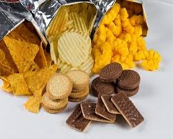
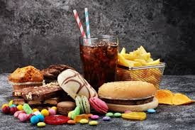

Conhecendo os alimentos: Do natural aos industrializados
Alimentos ultraprocessados são formulações industriais feitas inteiramente ou majoritariamente de substâncias extraídas de alimentos (óleos, gorduras, açúcar, amido, proteínas) derivados de constituintes alimentares ou sintetizados em laboratório. Eles possuem baixo custo, longa validade e alto teor de gordura, sódio e açúcar, sendo associados a obesidade e doenças crônicas.
Alguns ingredientes encontrados são: corantes, aromatizantes, realçadores de sabor.
Alguns exemplos são:refrigerantes, macarrão instantâneo, biscoitos recheados, salsichas e salgadinhos de pacote.
A principal diferença está na quantidade de processos industriais e na adição de ingredientes artificiais. Enquanto os alimentos processados são apenas modificados para durar mais, os ultraprocessados são produtos criados inteiramente em laboratório.

